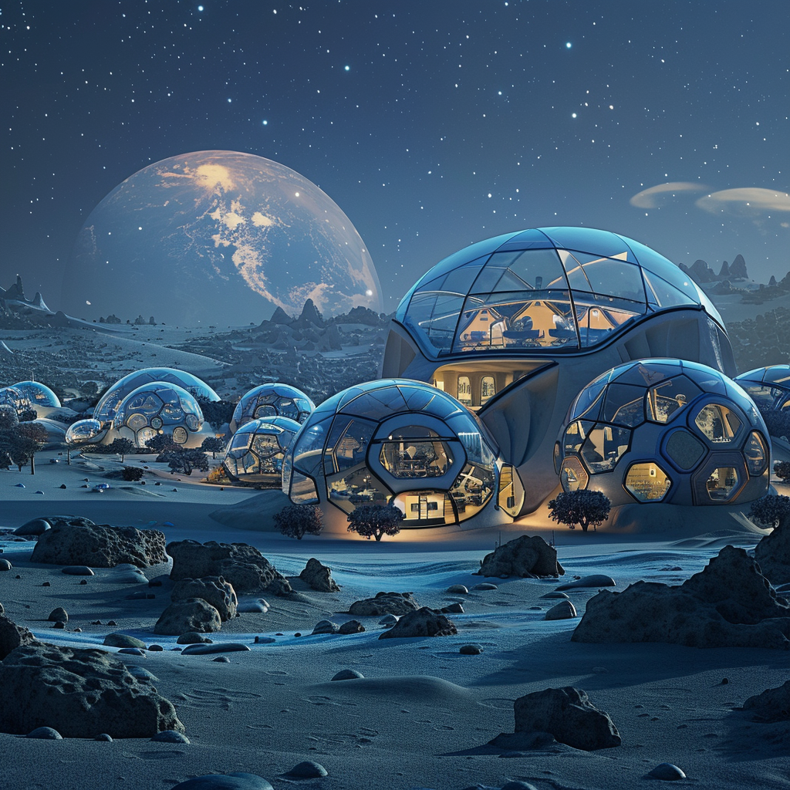

Introduction to the Lunar Scientific Research Center

Scientific Research Center (as proposed)
A self-sustained lunar base focused on scientific research, education, and exploration.
Population: ~150 individuals
Surface Area Estimate: Approximately 5000 square meters
Total Surface Area Components:
- Living Quarters: Private cabins, shared facilities, and recreational areas (~1000 sqm)
- Laboratories: Specialized labs with advanced scientific instruments (~1000 sqm)
- Medical Facilities: Clinic, emergency room, and quarantine rooms (~500 sqm)
- Hydroponic Gardens: For food production and oxygen generation (~500 sqm)
- Central Hub: Command center, administrative offices, and control room (~500 sqm)
- Recreational Areas: Gyms, sports facilities, and central park with hydroponic gardens (~500 sqm)
- Storage and Utility Areas: Water tanks, waste management, technical workshops (~500 sqm)
Social Structure:
- Regular cultural and social events
- Spaces for physical activity, hobbies, and relaxation
Sustainability:
- Advanced recycling systems for waste management
- Utilization of in-situ resources (ISRU)
- Renewable energy sources (solar, nuclear)